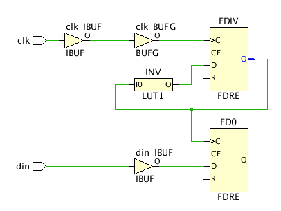

生成クロックの理解
図: 生成クロックの例 :

FDIV レジスタは FD0/C クロック ピンを駆動するので、ウィザードでは FD0 に正しいタイミング制約を付けるため、FDIV の出力に生成クロックを定義することが推奨されます。生成クロックの波形は、FDIV/D、FDIV/CE、および FDIV/R ピンに接続された信号を組み合わせてインプリメントしたファンクションによって異なります。この例の場合、単純に 2 で分周されています。次はその例です。
create_generated_clock -name clkdiv -divide_by 2 \
-source [get_pins FDIV/C] [get_pins FDIV/Q]
マスター クロックは、プライマリ クロックか別の生成クロックのいずれかになります。マスター クロックは、生成クロック制約で使用される前に定義しておく必要があります。
[Generated Clocks] ページの理解
- [Recommended Constraints] : タイミング制約ウィザードでは、その他のシーケンシャル セルのクロック ピンを駆動するシーケンシャル セルの出力に生成クロックを作成することが推奨されます。
- [Tcl Command Preview] : [Recommended Constraints] にリストされているように生成クロックを定義するのに使用される create_generated_clock コマンドを表示します。これらは、デザインに追加される制約です。これらの制約がデザインに追加されます。
- [Existing Constraints] : 現在定義されている生成クロック制約が表示されます。
上記のセクションにはそれぞれツールバーもあり、次のコマンドの 1 つまたは複数を実行できます
 |
Search | 検索文字列を入力するためのテキスト入力フィールドが表示されます。 |
 |
Select All | 推奨される制約すべてを選択します。 |
 |
Edit selected row | クロックの属性を定義するための [Generated Clock Constraints] ダイアログ ボックスが開きます。これらの属性は、[Recommended Constraints] リストのフィールドを直接クリックしても編集できます。 |
 |
Clock Networks | 新しいクロック ネットワーク レポートを生成する [Report Clock Networks] コマンドと既存レポートを開く [View Clock Networks] コマンドを実行するためのサブメニューが表示されます。 ヒント: クロック ネットワークは、[Clock Networks] ウィンドウにレポートされます。
|
関連項目
| 『UltraFast™ 設計手法ガイド (Vivado® Design Suite 用)』 (UG949) の「生成クロックの作成」 | |
| 『Vivado Design Suite ユーザー ガイド : 制約の使用』 (UG903) の「生成クロック」 | |
 |
Vivado Design Suite QuickTake ビデオ : 生成クロック制約の作成 |